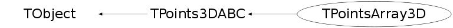

class TPointsArray3D: public TPoints3DABC
TPointsArray3D is an abstract class of the array of 3-dimensional points. It has 4 different constructors. This class has no implementation for Paint, Draw, and SavePrimitive methods First one, without any parameters TPointsArray3D(), we call 'default constructor' and it's used in a case that just an initialisation is needed (i.e. pointer declaration). Example: TPointsArray3D *pl1 = new TPointsArray3D; Second one is 'normal constructor' with, usually, one parameter n (number of points), and it just allocates a space for the points. Example: TPointsArray3D pl1(150); Third one allocates a space for the points, and also makes initialisation from the given array. Example: TPointsArray3D pl1(150, pointerToAnArray); Fourth one is, almost, similar to the constructor above, except initialisation is provided with three independent arrays (array of x coordinates, y coordinates and z coordinates). Example: TPointsArray3D pl1(150, xArray, yArray, zArray);
Function Members (Methods)
public:
| TPointsArray3D() | |
| TPointsArray3D(const TPointsArray3D& points) | |
| TPointsArray3D(Int_t n, Option_t* option = "") | |
| TPointsArray3D(Int_t n, Float_t* p, Option_t* option = "") | |
| TPointsArray3D(Int_t n, Float_t* x, Float_t* y, Float_t* z, Option_t* option = "") | |
| virtual | ~TPointsArray3D() |
| void | TObject::AbstractMethod(const char* method) const |
| virtual Int_t | TPoints3DABC::Add(Float_t x, Float_t y, Float_t z) |
| virtual Int_t | TPoints3DABC::AddLast(Float_t x, Float_t y, Float_t z) |
| virtual void | TObject::AppendPad(Option_t* option = "") |
| virtual void | TObject::Browse(TBrowser* b) |
| static TClass* | Class() |
| virtual const char* | TObject::ClassName() const |
| virtual void | TObject::Clear(Option_t* = "") |
| virtual TObject* | TObject::Clone(const char* newname = "") const |
| virtual Int_t | TObject::Compare(const TObject* obj) const |
| virtual void | Copy(TObject& points) const |
| virtual void | TObject::Delete(Option_t* option = "")MENU |
| static Int_t | TPoints3DABC::DistancetoLine(Int_t px, Int_t py, Float_t x1, Float_t y1, Float_t x2, Float_t y2, Int_t lineWidth = 1) |
| virtual Int_t | DistancetoPrimitive(Int_t px, Int_t py) |
| virtual void | TObject::Draw(Option_t* option = "") |
| virtual void | TObject::DrawClass() constMENU |
| virtual TObject* | TObject::DrawClone(Option_t* option = "") constMENU |
| virtual void | TObject::Dump() constMENU |
| virtual void | TObject::Error(const char* method, const char* msgfmt) const |
| virtual void | TObject::Execute(const char* method, const char* params, Int_t* error = 0) |
| virtual void | TObject::Execute(TMethod* method, TObjArray* params, Int_t* error = 0) |
| virtual void | ExecuteEvent(Int_t event, Int_t px, Int_t py) |
| virtual void | TObject::Fatal(const char* method, const char* msgfmt) const |
| virtual TObject* | TObject::FindObject(const char* name) const |
| virtual TObject* | TObject::FindObject(const TObject* obj) const |
| virtual Option_t* | TObject::GetDrawOption() const |
| static Long_t | TObject::GetDtorOnly() |
| virtual const char* | TObject::GetIconName() const |
| virtual Int_t | GetLastPosition() const |
| virtual Int_t | GetN() const |
| virtual const char* | TObject::GetName() const |
| virtual char* | TObject::GetObjectInfo(Int_t px, Int_t py) const |
| static Bool_t | TObject::GetObjectStat() |
| virtual Option_t* | GetOption() const |
| virtual Float_t* | GetP() const |
| virtual const char* | TObject::GetTitle() const |
| virtual UInt_t | TObject::GetUniqueID() const |
| virtual Float_t | GetX(Int_t idx) const |
| virtual const Float_t* | GetXYZ(Int_t idx) |
| virtual Float_t* | GetXYZ(Float_t* xyz, Int_t idx, Int_t num = 1) const |
| virtual Float_t | GetY(Int_t idx) const |
| virtual Float_t | GetZ(Int_t idx) const |
| virtual Bool_t | TObject::HandleTimer(TTimer* timer) |
| virtual ULong_t | TObject::Hash() const |
| virtual void | TObject::Info(const char* method, const char* msgfmt) const |
| virtual Bool_t | TObject::InheritsFrom(const char* classname) const |
| virtual Bool_t | TObject::InheritsFrom(const TClass* cl) const |
| virtual void | TObject::Inspect() constMENU |
| void | TObject::InvertBit(UInt_t f) |
| virtual Bool_t | Is3D() const |
| virtual TClass* | IsA() const |
| virtual Bool_t | TObject::IsEqual(const TObject* obj) const |
| virtual Bool_t | TObject::IsFolder() const |
| Bool_t | TObject::IsOnHeap() const |
| virtual Bool_t | TObject::IsSortable() const |
| Bool_t | TObject::IsZombie() const |
| virtual void | ls(Option_t* option = "") const |
| void | TObject::MayNotUse(const char* method) const |
| virtual Bool_t | TObject::Notify() |
| void | TObject::Obsolete(const char* method, const char* asOfVers, const char* removedFromVers) const |
| static void | TObject::operator delete(void* ptr) |
| static void | TObject::operator delete(void* ptr, void* vp) |
| static void | TObject::operator delete[](void* ptr) |
| static void | TObject::operator delete[](void* ptr, void* vp) |
| void* | TObject::operator new(size_t sz) |
| void* | TObject::operator new(size_t sz, void* vp) |
| void* | TObject::operator new[](size_t sz) |
| void* | TObject::operator new[](size_t sz, void* vp) |
| TPointsArray3D& | operator=(const TPointsArray3D&) |
| virtual void | TObject::Paint(Option_t* option = "") |
| virtual void | PaintPoints(Int_t, Float_t*, Option_t*) |
| virtual void | TObject::Pop() |
| virtual void | Print(Option_t* option = "") const |
| virtual Int_t | TObject::Read(const char* name) |
| virtual void | TObject::RecursiveRemove(TObject* obj) |
| void | TObject::ResetBit(UInt_t f) |
| virtual void | TObject::SaveAs(const char* filename = "", Option_t* option = "") constMENU |
| virtual void | TObject::SavePrimitive(ostream& out, Option_t* option = "") |
| void | TObject::SetBit(UInt_t f) |
| void | TObject::SetBit(UInt_t f, Bool_t set) |
| virtual void | TObject::SetDrawOption(Option_t* option = "")MENU |
| static void | TObject::SetDtorOnly(void* obj) |
| virtual Int_t | SetLastPosition(Int_t idx) |
| virtual Int_t | TPoints3DABC::SetNextPoint(Float_t x, Float_t y, Float_t z) |
| static void | TObject::SetObjectStat(Bool_t stat) |
| virtual void | SetOption(Option_t* option = "") |
| virtual Int_t | SetPoint(Int_t point, Float_t x, Float_t y, Float_t z)MENU |
| virtual Int_t | SetPoints(Int_t n, Float_t* p = 0, Option_t* option = "") |
| virtual void | TObject::SetUniqueID(UInt_t uid) |
| virtual void | ShowMembers(TMemberInspector& insp) |
| virtual Int_t | Size() const |
| virtual void | Streamer(TBuffer& b) |
| void | StreamerNVirtual(TBuffer& b) |
| virtual void | TObject::SysError(const char* method, const char* msgfmt) const |
| Bool_t | TObject::TestBit(UInt_t f) const |
| Int_t | TObject::TestBits(UInt_t f) const |
| virtual void | TObject::UseCurrentStyle() |
| virtual void | TObject::Warning(const char* method, const char* msgfmt) const |
| virtual Int_t | TObject::Write(const char* name = 0, Int_t option = 0, Int_t bufsize = 0) |
| virtual Int_t | TObject::Write(const char* name = 0, Int_t option = 0, Int_t bufsize = 0) const |
protected:
| virtual void | TObject::DoError(int level, const char* location, const char* fmt, va_list va) const |
| void | TObject::MakeZombie() |
Data Members
public:
| enum TObject::EStatusBits { | kCanDelete | |
| kMustCleanup | ||
| kObjInCanvas | ||
| kIsReferenced | ||
| kHasUUID | ||
| kCannotPick | ||
| kNoContextMenu | ||
| kInvalidObject | ||
| }; | ||
| enum TObject::[unnamed] { | kIsOnHeap | |
| kNotDeleted | ||
| kZombie | ||
| kBitMask | ||
| kSingleKey | ||
| kOverwrite | ||
| kWriteDelete | ||
| }; |
Class Charts
{kind=link}
{kind=link}
{kind=link}
{kind=link}

Function documentation
TPointsArray3D(Int_t n, Option_t* option = "")
3-D PolyLine normal constructor without initialisation*- *-* ====================================================== *-* If n < 0 the default size (2 points) is set -
TPointsArray3D(Int_t n, Float_t* p, Option_t* option = "")
-*3-D Point3D normal constructor *-* =============================== *-* If n < 0 the default size (2 points) is set -
TPointsArray3D(Int_t n, Float_t* x, Float_t* y, Float_t* z, Option_t* option = "")
-*3-D PolyLine normal constructor *-* =============================== *-* If n < 0 the default size (2 points) is set -
void Copy(TObject& points) const
-*Copy this TPointsArray3D to another *-* ==============================
Int_t DistancetoPrimitive(Int_t px, Int_t py)
Compute distance from point px,py to a 3-D points *-* ===================================================== - *-* Compute the closest distance of approach from point px,py to each segment *-* of the polyline. *-* Returns when the distance found is below DistanceMaximum. *-* The distance is computed in pixels units. - -
void ExecuteEvent(Int_t event, Int_t px, Int_t py)
Execute action corresponding to one event *-* =========================================
void ls(Option_t* option = "") const
-*-*-*List this 3-D polyline with its attributes *-* ==========================================
void Print(Option_t* option = "") const
-*Dump this 3-D polyline with its attributes *-* ==========================================
Int_t SetPoint(Int_t point, Float_t x, Float_t y, Float_t z)
Initialize one point of the 3-D polyline *-* ======================================== *-* if n is more then the current TPointsArray3D size (n > fN) - re-allocate this *-* The new size of the object will be fN += min(10,fN/4) - *-* return the total number of points introduced -
Int_t SetPoints(Int_t n, Float_t* p = 0, Option_t* option = "")
Set new values for this 3-D polyline *-* ==================================== *-* return the total number of points introduced -
void Streamer(TBuffer& b)
Stream a class object*-*-*-*-*-*-*- *-* =========================================